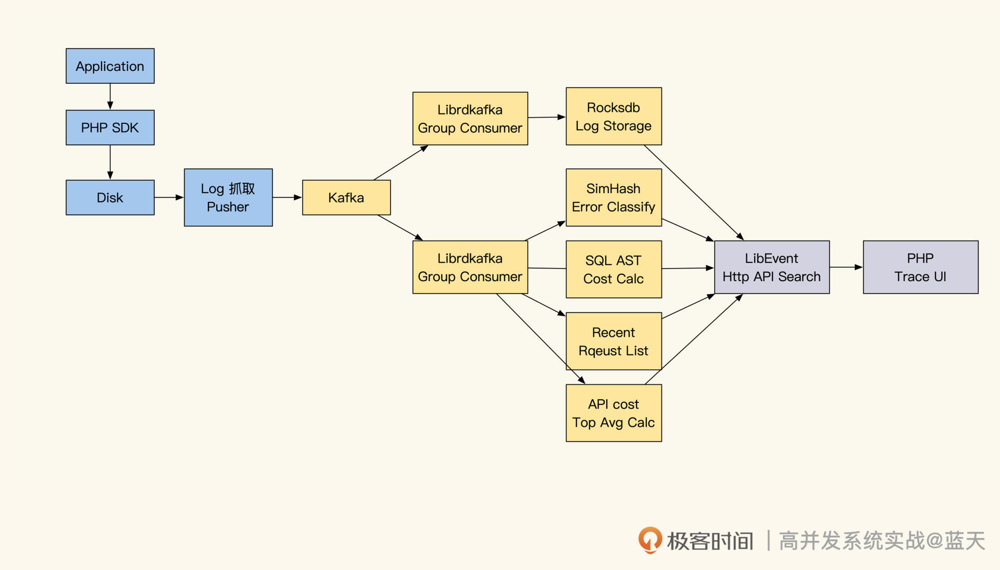
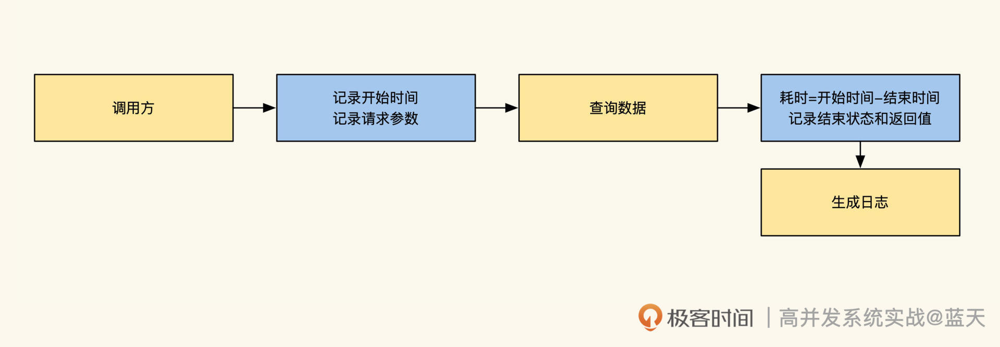
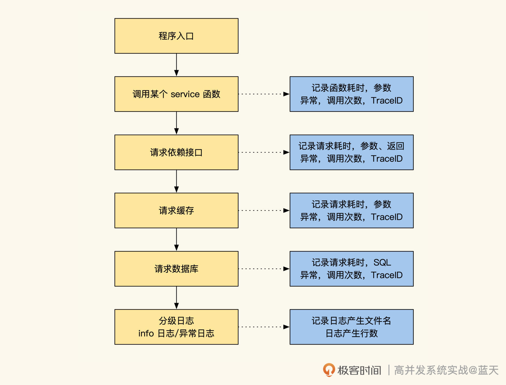
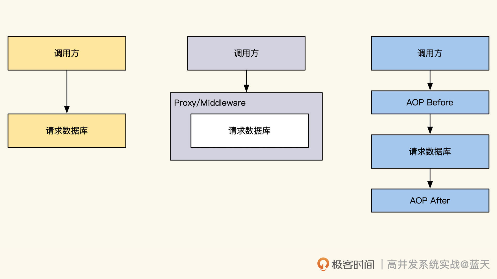
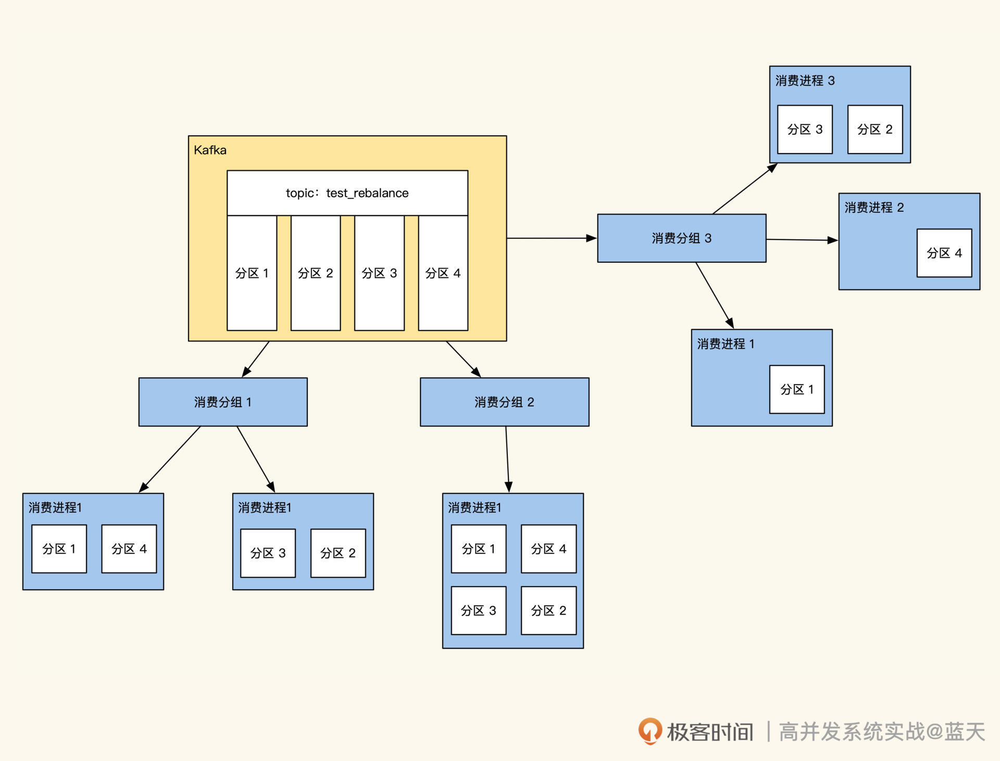
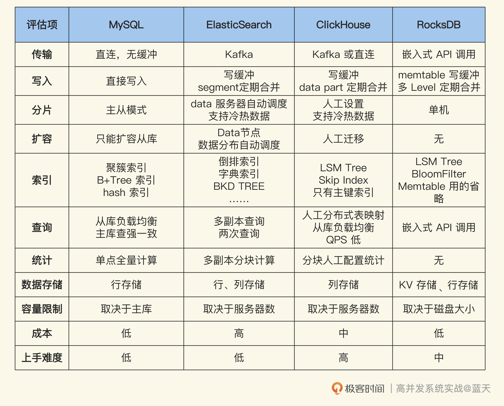

- 00 开篇词 高并发系统，技术实力的试金石.md.html
- 01 结构梳理：大并发下，你的数据库表可能成为性能隐患.md.html
- 02 缓存一致：读多写少时，如何解决数据更新缓存不同步？.md.html
- 03 Token：如何降低用户身份鉴权的流量压力？.md.html
- 04 同城双活：如何实现机房之间的数据同步？.md.html
- 05 共识Raft：如何保证多机房数据的一致性？.md.html
- 06 领域拆分：如何合理地拆分系统？.md.html
- 07 强一致锁：如何解决高并发下的库存争抢问题？.md.html
- 08 系统隔离：如何应对高并发流量冲击？.md.html
- 09 分布式事务：多服务的2PC、TCC都是怎么实现的？.md.html
- 10 稀疏索引：为什么高并发写不推荐关系数据库？.md.html
- 11 链路追踪：如何定制一个分布式链路跟踪系统 ？.md.html
- 12 引擎分片：Elasticsearch如何实现大数据检索？.md.html
- 13 实时统计：链路跟踪实时计算中的实用算法.md.html
- 14 跳数索引：后起新秀ClickHouse.md.html
- 15 实践方案：如何用C++自实现链路跟踪？.md.html
- 16 本地缓存：用本地缓存做服务会遇到哪些坑？.md.html
- 17 业务脚本：为什么说可编程订阅式缓存服务更有用？.md.html
- 18 流量拆分：如何通过架构设计缓解流量压力？.md.html
- 19 流量调度：DNS、全站加速及机房负载均衡.md.html
- 20 数据引擎：统一缓存数据平台.md.html
- 21 业务缓存：元数据服务如何实现？.md.html
- 22 存储成本：如何推算日志中心的实现成本？.md.html
- 23 网关编程：如何通过用户网关和缓存降低研发成本？.md.html
- 24 性能压测：压测不完善，效果减一半.md.html
- 答疑课堂 思考题答案（一）.md.html
- 结束语 为者常成，行者常至.md.html
- 捐赠
15 实践方案：如何用C++自实现链路跟踪？
你好，我是徐长龙。
在前面几节课，我们讲解了MySQL和多个分布式检索系统的关键原理，明白了它们如何实现分布式数据存储和检索。写多读少系统的主要优化思路相信你已经心中有数了，主要包括：用分布式队列汇总日志、利用内存缓存新写入的数据、顺序写入磁盘、多服务器分片、分布式查询可拆分索引。
不过你可能觉得这些离我们的业务逻辑还有点远，这节课我就分享一下，之前我是怎样用C++来实现链路跟踪系统的。
通过分析这个系统实现的主要思路和关键细节，你不但能学到业务场景里的实用技巧，更重要的是，把技术理解和业务实现联系在一起，更深入地理解写多读少的系统。
案例背景
2016年我在微博任职，那时微博有很多重要但复杂的内部系统，由于相互依赖较为严重，并且不能登陆公用集群，每次排查问题的时候都很痛苦。
很多问题需要不断加日志试探，三天左右才能摸出眉目。为了更高效地排查线上故障，我们需要一些工具辅助提高排查问题效率，于是我和几个伙伴合作实现了一个分布式链路跟踪的系统。
由于那时候，我只有两台4核8G内存服务器，可用硬件资源不多，所以分布式链路跟踪的存储和计算的功能是通过C++ 11实现的。这个项目最大的挑战就是如何在有限的资源下，记录下所有请求过程，并能够实时统计监控线上故障，辅助排查问题。
要想做一个这样的系统，主要分为几个关键功能：日志采集、日志传输、日志存储、日志查询、实时性能统计展示以及故障线索收集。经过讨论，我们确定了具体项目实现思路，如下图所示：

链路跟踪的第一步就是收集日志。当时我看了链路跟踪的相关资料后，决定按分布式链路跟踪思路去设计实现。因为这样做，可以通过每次请求入口产生的的TraceID，汇集一次请求的所有相关日志。
但是具体收集什么日志，才对排查问题更有帮助呢？如果链路跟踪只记录接口的性能，实际就只能辅助我们分析性能问题，对排查逻辑问题意义并不大。
经过进一步讨论，我们决定给分级日志和异常日志都带上TraceID，方便我们获取更多业务过程状态。另外，我们在请求其他服务的请求Header内也加上TraceID和RPCID，并且记录了API、SQL请求的参数、返回内容和性能数据。综合这些，就能实现完整的全量日志监控跟踪系统，性能问题和逻辑缺陷都能排查。
接下来，我们就看看这里的主要功能是怎样实现的。
抓取、采集与传输
日志采集在我们的系统里怎么实现呢？
相信你多少能猜到大致做法：一般来说，我们需要在接口被请求时，接收传递过来的TraceID以及RPCID，如果没有传递过来的TraceID，那么自己可以用UUID生成一个，用于标识后续在请求期间所有的日志。

服务被请求时，建议记录一条被调用的访问日志，具体可以记录当前被请求的参数以及接口最后返回的结果、httpcode、耗时。通过这个日志，后续可以方便我们分析服务的性能和故障。

而对于被请求期间的业务所产生的业务日志、错误日志，以及请求其他资源的日志，都需要做详细记录，比如SQL查询记录、API请求记录以及这些请求的参数、返回、耗时。

无论我们想做链路跟踪还是统计系统服务状态，都需要做类似AOP切面拦截，通过切面编程抓取所有操作数据库或API请求前后的数据。为了更好理解这里给你提供一个AOP的实现样例，这是我之前在生产环境中使用的。
记录了项目的请求依赖资源部分之后，我用了两个传输方式来传输生成的日志：一个是通过memcache的长链接协议，将日志推送到我们日志收集服务上，这种推送日志请求超时超过200ms就会丢弃，这样能避免拖慢接口的性能。
另外一个方式是落地到本地磁盘，通过Filebeat实时抓取推送，将日志收集汇总起来。当然，第二种方式最稳定，但是由于我们公共服务器集群不让登录的限制，有一部分系统只能使用第一种方式来传递日志。
前面提到，由于跟踪的都是核心系统，并且业务都很复杂，所以我们对所有的请求过程和参数返回都做了记录。
可以预见，这样的方式产生的日志量很大，而且日志的写并发吞吐很高，甚至支付系统在某次服务高峰时会出现日志写 100MB/s的情况。因此我们的日志写入及传输都需要有很好的性能服务支持，同时还要保证日志不会丢失。
为此，我们选择了用Kafka来传输日志，Kafka通过对同一个topic数据做多个分区动态调配来实现负载均衡及动态扩容，当我们流量超过其承受能力时，可以随时通过给服务器群组增加服务器来扩容，从而提供更好的吞吐量。可以说多系统之间的实时高吞吐传输同步，几乎都是使用Kafka实现的。
可动态扩容的分组消费
那么Kafka是如何帮助业务动态扩容消费性能的呢？

在Kafka消费这里使用的是Consumer Group分组消费，分组消费是一个很棒的实现，我们可以让多个服务同时消费一组数据，比如：启动两个进程消费20个分区的数据，也就是一个服务负责消费10个区的数据。
如果服务运转期间消费能力不够了，消息出现堆积，我们可以找两台服务器新启动2个消费进程，此时Kafka会对consumer进程自动重新调度（rebalance），让四个消费进程平分20个分区，即自动调度成每个消费进程消费5个分区的数据。
通过这个功能，我们可以动态扩容消费服务器的能力，比如随时增加消费进程数来提高消费能力，甚至一些消费服务可以随时重启。
这个功能可以让我们动态扩容变得更容易，对于写并发大的数据流传输或同步的服务帮助很大，几乎大部分最终一致性的数据服务，最终都是靠分布式队列来实现的。微博内部很多系统间的数据同步，最后都改成了使用kafka去做同步。
基于Kafka的分组特性，我们将服务做成了两组消费服务，一组用于数据的统计，一组用于存储，通过这个方式隔离存储和实时统计服务。
写多读少的RocksDB
接下来，我们重点说说分布式存储怎么处理，因为这是自实现最有特色的地方。另外，计算部分的实现和第十三节课的情况大同小异，你可以点这里回看。
考虑到只有两台存储服务器，我需要提供一个写性能很好并支持“检索”的日志存储检索服务，经过查找和对比，最终我选择了RocksDB。
RocksDB是Facebook做实验出来的产品，后经不断完善，最终被大量用户使用。它提供了超越LevelDB写性能的服务，能够在Flash、磁盘、HDFS媒介上存储，并且能够充分利用多核以及SSD提供更高性能的高负载数据存储服务。
由于Rocksdb是嵌入式的，所以我们实现的服务和存储引擎之间没有网络消耗，性能会更好，再配合上Kafka分组消费，就可以实现一个无副本的分布式存储。
我首先看中的是RocksDB这个引擎的写性能。回想一下我们第十节课讲过的内容，RocksDB利用了内存做缓存，同时利用磁盘顺序写性能最强的特性，能够提供接近单机300M/s的写数据能力，理想情况下，两台存储服务器就可以提供600M/s的写入能力。再加上Kafka缓解写高峰压力，这个设计已经能满足大部分业务需求了。
其次，RocksDB的接入非常简单，想要在项目中引入它的库，只要保证它的写操作只有一个线程写，其他线程可以实例化 Secondary只读即可。
此外，RocksDB还支持内存和磁盘冷热数据的自动管理、存储数据压缩等功能，而且单个库就能存储上TB的数据、单个Value 长度能够达到3G，这非常适合在分布式链路跟踪的系统里存储和查找大量的文本日志。
接下来要解决的问题就是，如何在RocksdDB分配管理我们的Trace日志。
为了提高查询效率，并且只保留7天日志，我们选择了按天保存日志，一天一个RocksDB库，过期的数据库可以删除或归档到HDFS内。
汇总保存日志的时候，我们利用了RocksDB的这两个方面的特性。一方面通过Trace日志的TraceID作为key来存储，这样我们直接通过TraceID就可以查到所有相关日志。
另一方面，是利用Merge操作对KV中的value实现string append。Merge是RocksDB里很少有人提到的一个功能，但用起来还不错，可以帮我们把所有日志高性能地追加到一个Key内。Merge操作的官方demo代码你可以从这里获取，如果对于实现原理感兴趣，还可以参考下 rocksdb-merge-operators。
分布式查询与计算
数据存储好后，如何查询呢？
事实上很简单，我们的Trace SDK会让每个接口返回响应内容的同时，在header中包含了TraceID，debug的时候使用返回traceId进行查询时，界面会对所有存储节点发送查询请求，通过TraceID从RocksDB拿出所有按回车分割的日志后，汇总排序即可。
另外，日志存储服务集成了Libevent，通过它实现了HTTP和Memcache协议的查询接口服务，由于这里比较复杂有多个模式，这里不对这个做详细介绍了，如果你想了解如何用epoll和Socket实现一个简单的HTTP服务，具体可以看看我闲暇时写的小demo 。
我再补充说一下，怎么对多节点数据进行查询。由于读操作很少，我们可以通过异步请求多个存储实例直接问询查询内容，再到协调节点进行汇总排序即可。
说完了数据查询，我们再聊聊分布式计算。
想要实现服务器状态统计计算，核心还是利用Kafka的分组消费，另外启动一组服务消费日志内容，在内存中对日志进行汇总计算。
如果想采样服务器的请求情况，可以定期按时间块索引随机采1000个TraceID到RocksDB的时间块索引内，需要展示的时候，将它们取出聚合展示即可。关于实时计算的算法和思路，我在第十三节课中已经讲过了，你可以去回顾一下。
关于自实现的整体思路我们聊完了。看完以后你可能会好奇，现在硬件资源已经很充裕了，我还用学习这些吗？
事实上，在硬件资源充裕的时代我们还是要考虑成本。我们推算一下，比如2000台服务器性能提升一倍，就能节省1000台服务器。如果一台每年1w维护费用，那么就是每年能节省1000w。架构师除了解决业务问题外，大部分时间都是在思考如何在保证服务稳定的情况下降低成本。
另外，我再说说选择开源的一些建议。由于市面很多开源是共建的，并且有一些开源属于个人的习作，没有在生产环境验证过。我们要尽量选择在生产环境验证过的、活跃的社区功能。
虽然之前我使用C++实现链路跟踪，但现在技术发展得很快，如果放在今天，我是不推荐你也用同样方法做这个服务的。实践的时候，你可以考虑使用Java、GO、Rust等语言去尝试，相信这样会让你节省大量的时间。
总结
这节课我和你分享了我用C++实现链路跟踪的实践方案，其中的技术要点你可以参考下图。

写多读少的系统，普遍会用分布式的队列服务（类似Kafka）汇总数据，配合多台服务器或分片来消费加工数据，通过这样的架构来应对数据洪流。
这一章我们详细分析了写多读少系统的几种方案，你会发现它们各有千秋。为了方便你对比学习，我引入了MySQL作为参考。
你也可以参考后面这张表格的思路，把技术实现的关键点（比如数据传输、写入、分片、扩容、查询等等）列出来，通过这种方式，可以帮你快速分析出哪种技术实现更匹配自己项目的业务需要。

思考题
今天我给你准备了两道思考题。
第一题，如何解决Kafka消费偶发乱序以及小概率消费重复问题？
第二题稍有难度，有兴趣的话你可以挑战一下。epoll实现时会分单线程Reactor、单Reactor多线程、多线程Reactor这几种方式，对于存储服务你觉得哪种方式更适合呢？
欢迎你在留言区与我交流讨论，我们下节课见！
© 2019 - 2023 Liangliang Lee. Powered by gin and hexo-theme-book.